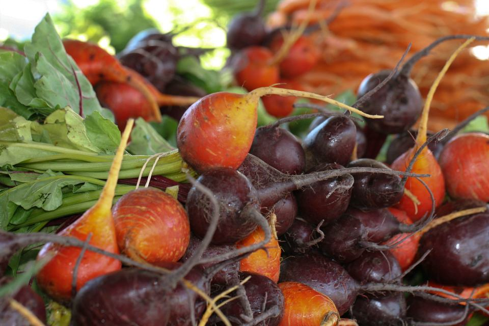
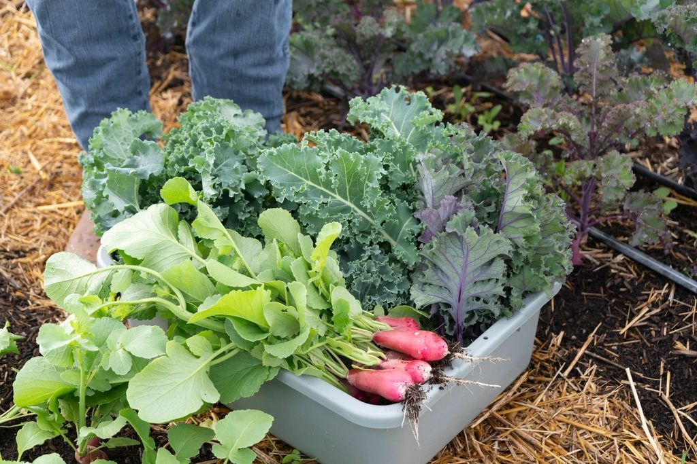

Do campo ao consumidor, cada lote com história
A rastreabilidade de frutas, legumes e verduras registra a origem e o caminho de cada produto. A E-Conect ajuda a colocar esse controle na rotina de quem produz e de quem vende.

Como a rastreabilidade funciona
Seis etapas que acompanham o produto da propriedade até a mesa.
-
Etapa 1
Origem do produto
Identificação do produtor, da propriedade e da área de cultivo.
-
Etapa 2
Registro do lote
Cada colheita recebe um código com data, cultura e quantidade.
-
Etapa 3
Acompanhamento da produção
Registro dos tratos culturais e dos insumos usados no cultivo.
-
Etapa 4
Transporte e distribuição
O lote é acompanhado na embalagem, no transporte e na entrega.
-
Etapa 5
Consulta das informações
Comprador e consumidor acessam os dados pelo código ou QR Code.
-
Resultado
Mais transparência
Toda a cadeia ganha confiança, do produtor ao consumidor.
Veja como a informação aparece
Um exemplo de como etiqueta, histórico e acompanhamento podem ser apresentados.
Demonstração ilustrativa · dados fictícios
Etiqueta de lote
- Produto
- Tomate italiano
- Lote
- DEMO-0001
- Produtor
- [Nome do produtor]
- Origem
- [Município – UF]
- Colheita
- [dd/mm/aaaa]
- Peso
- [00] kg
Linha do tempo do produto
- PlantioÁrea 3 · muda registradaDia 1
- Tratos culturaisAdubação e irrigação registradasDia 30
- Colheita e embalagemLote DEMO-0001 geradoDia 90
- TransporteSaída para o centro de distribuiçãoDia 91
- Ponto de vendaDisponível para consulta pelo QR CodeDia 92
Painel de acompanhamento
Valores fictícios, apenas para ilustrar como o acompanhamento pode ser visualizado.
O que muda com a rastreabilidade
Benefícios para quem produz, para quem vende e para quem consome.
Mais controle
Você sabe o que foi produzido, quando e onde.
Mais transparência
Informação clara e acessível sobre cada lote.
Redução de desperdícios
Problemas são localizados no lote certo, sem descartar tudo.
Maior confiança
Compradores e consumidores sabem de onde vem o alimento.
Organização da cadeia
Produtor, distribuidor e varejo falam a mesma língua.
Segurança dos alimentos
Base para responder rápido a qualquer ocorrência.

Para quem é
Para quem produz, embala, distribui ou vende frutas, legumes e verduras e precisa organizar as informações de cada lote.
- Produtores rurais e agricultura familiar
- Empresas que embalam e distribuem hortifrúti
- Varejistas que exigem rastreabilidade dos fornecedores
A rastreabilidade de FLV segue a Instrução Normativa Conjunta nº 02/2018. Ajudamos você a entender o que ela pede e a aplicar na prática.
Pronto para rastrear a sua produção?
Mostramos como a rastreabilidade se encaixa na sua rotina, sem complicar o dia a dia.